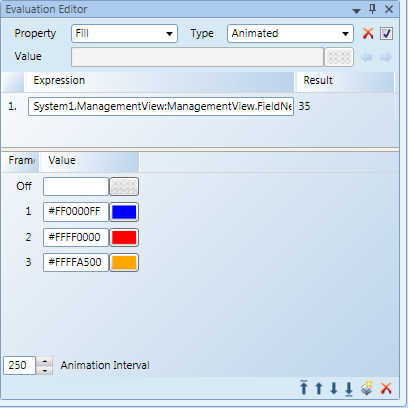

Example: Animation Evaluation
Example: You have a rectangle drawn on the canvas and want to cycle through a sequence of Fill colors, if the data point does not have a value, then nothing displays.

- Select the element on the canvas.
- In the Evaluation Editor, do the following:
a. From the Property drop-down menu, select: Fill
b. From the Type drop-down menu, select: Animated - From System Browser, in the Expression field, drag-and-drop the data point, for example, a Binary Output.
- Next to the Off frame, in the Value field, leave the Value field blank.
- Click
 to add a new evaluation line, In the Value field, type the name of the color you would like to display in that interval. Repeat for each subsequent frame.
to add a new evaluation line, In the Value field, type the name of the color you would like to display in that interval. Repeat for each subsequent frame.
NOTE: You can also drag-and-drop Symbols in each Value field, instead of a color and the cycle through the Symbol images. - Adjust the Animation Interval as needed.